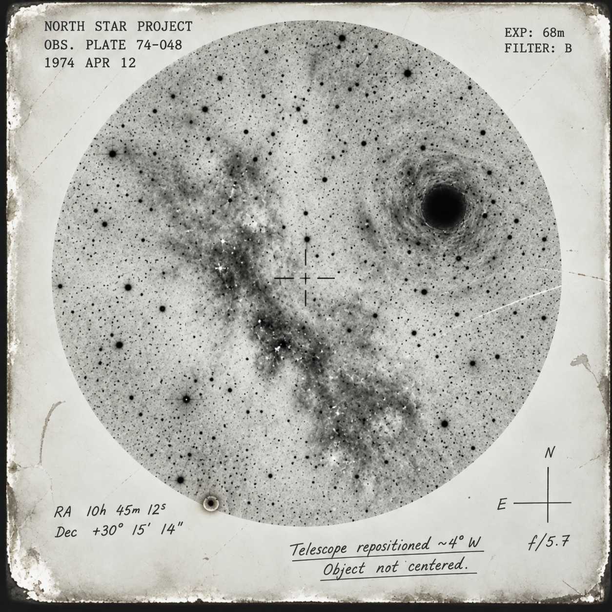

IMAGE DECODING FAILURE
61% OF IMAGE DATA RECOVERED
RECONSTRUCTION COMPLETE
CATALOG MATCH: NSP-74-048
STELLAR REFERENCES IDENTIFIED: 147
PHOTOGRAPHIC DEFECTS: 3
UNIDENTIFIED OBJECTS: 0
NO ANOMALOUS IMAGE DATA DETECTED
CHECKSUM MATCH: 100%
IMAGE MODIFICATION: NONE